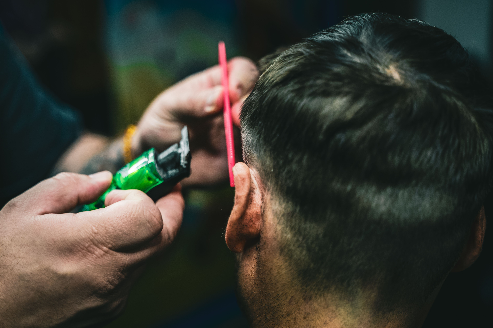
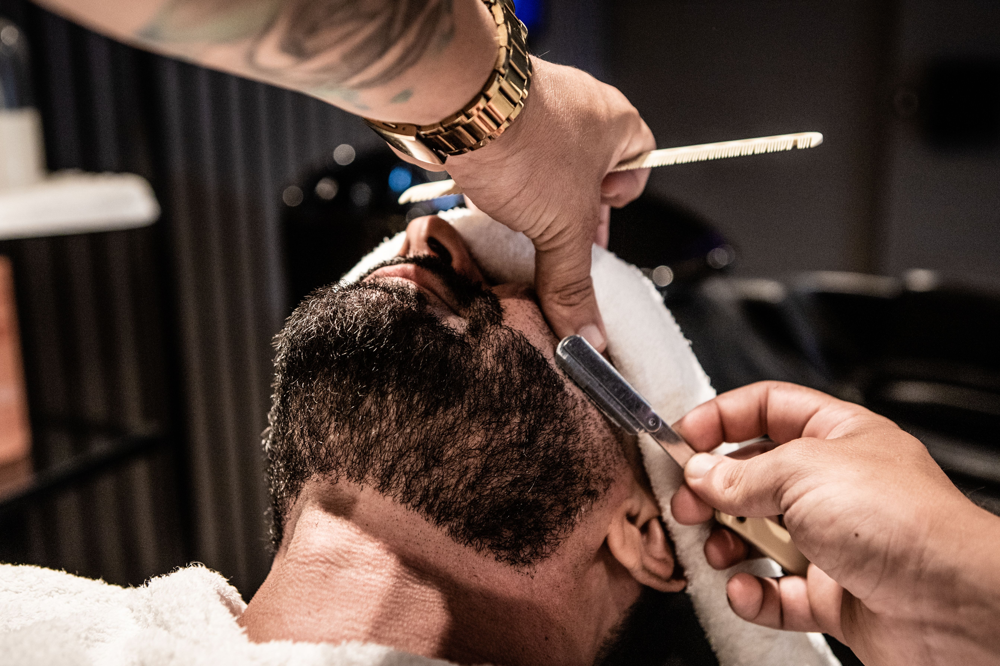
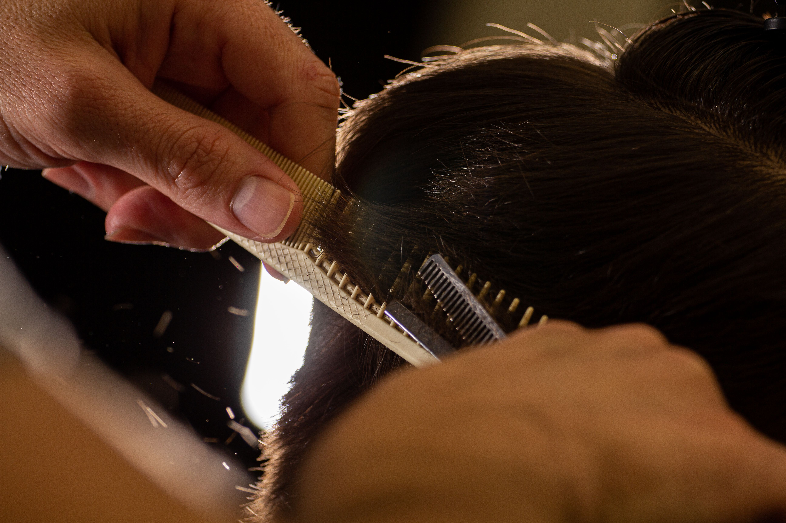

Nossa História
A Barbearia do Gegeu surgiu com o propósito de oferecer um espaço acolhedor e descontraído para pessoas que buscam cuidar da aparência e elevar a autoestima. Criada por Gegeu, um barbeiro apaixonado pela profissão, a barbearia começou de forma simples, atendendo amigos, familiares e moradores da região. Com o passar do tempo, o trabalho de Gegeu ganhou reconhecimento pela qualidade dos serviços, pelo atendimento próximo e pelo ambiente agradável. A pequena barbearia foi crescendo e conquistando novos clientes, tornando-se um ponto conhecido entre os moradores. Atualmente, a Barbearia do Gegeu busca manter a essência de seu início, valorizando o relacionamento com os clientes e oferecendo um atendimento de qualidade. Além disso, o estabelecimento procura acompanhar as tendências do mercado sem deixar de lado o atendimento personalizado que marcou sua história.
Serviços Prestados
A Barbearia do Gegeu oferece diferentes serviços voltados para cuidados com cabelo e barba, buscando atender às necessidades e preferências de cada cliente. Entre os principais serviços estão cortes de cabelo tradicionais e modernos, realizados de acordo com o estilo escolhido pelo cliente. A barbearia também oferece serviços de barba, incluindo aparação, modelagem e acabamento, proporcionando um visual mais alinhado. Para complementar o atendimento, são realizados acabamentos com máquina e navalha, além de cuidados básicos para manter a aparência do cabelo e da barba. Os clientes também podem contar com serviços combinados de cabelo e barba, tornando o atendimento mais completo e prático. Dessa forma, a Barbearia do Gegeu procura oferecer variedade, qualidade e praticidade, garantindo que cada cliente tenha uma experiência satisfatória durante sua visita.
Galeria de Trabalhos


